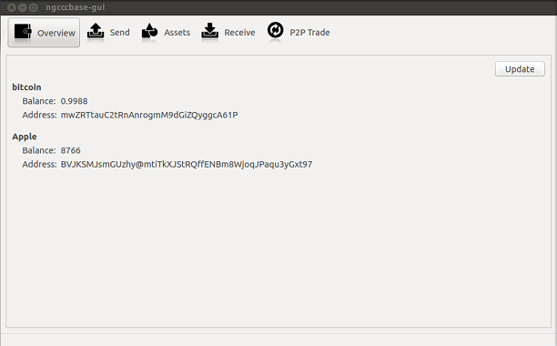
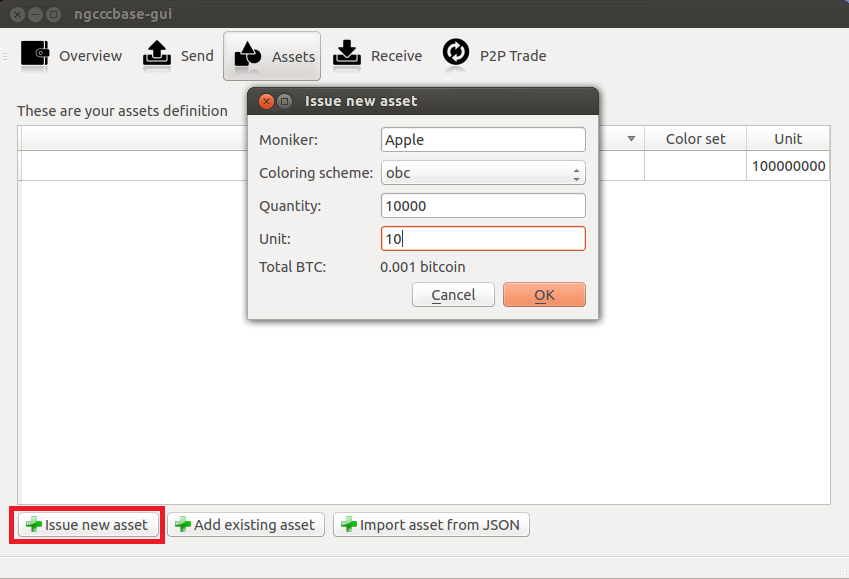
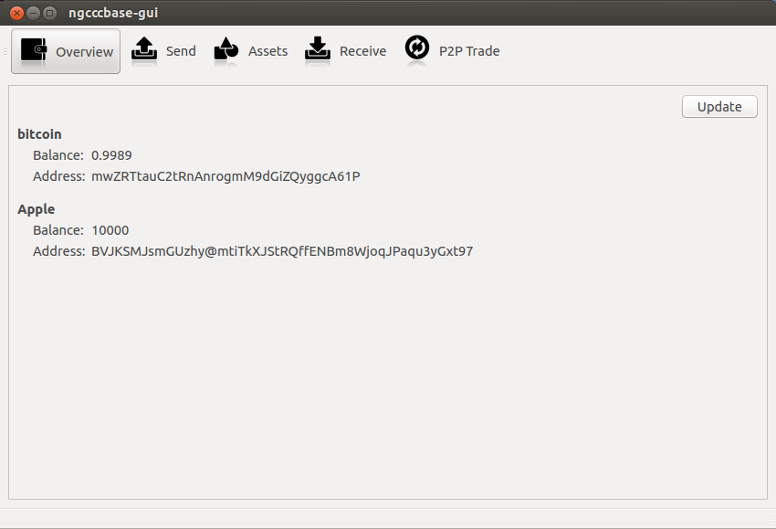
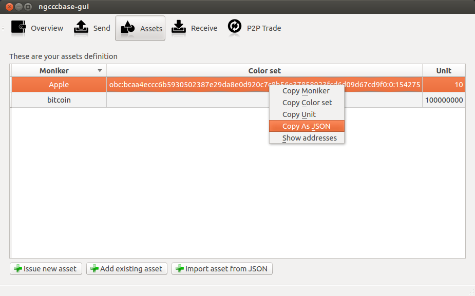
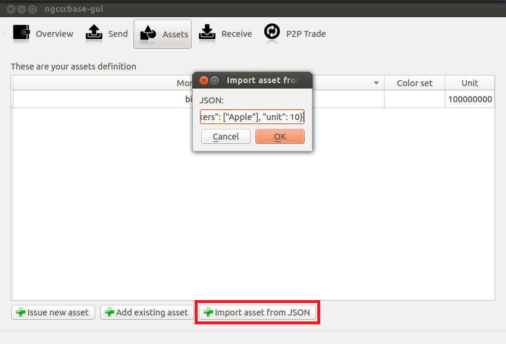
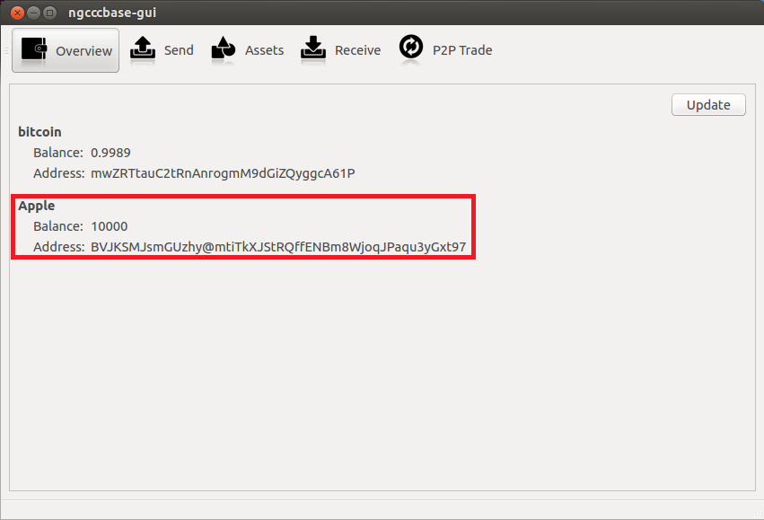

ChromaWallet user's guide

Table of contents
- Installation
- Asset Management
- Sending and Receiving Assets
- P2P Trade
Installation
Download the latest version of ChromaWallet from here, extract it to a location of your choosing. In the unpacked directory you can find two programs:
chromawallet is graphical user interface-
cw-cli provides command-line interface
Most actions can be performed through either of interfaces, but command-line application also provides low-level functions. You can find a list of commands which are accepted by cw-cli by running
cw-cli --help
You can use --testnet command-line switch to run client in testnet mode, in that case a separate testnet wallet will be used. E.g.:
chromawallet will use mainnet.wallet (in the current directory) chromawallet --testnet will use testnet.wallet
Running Multiple Clients on One Machine
- You can run as many clients as you want, to do this you will simply need to copy the chromawallet directory, delete the *.wallet in the copied directory, and then run chromawallet from the new directory. A new wallet will be created.
- You can now send bitcoins and assets between the two wallets.
Asset Management
Issuing an Asset
Note: you need bitcoins in your wallet to be able to issue an asset.
If you just want to try it out, you can run wallet in testnet mode and obtain testnet bitcoins from a faucet.
- Click on the Assets tab, and then click on the issue new asset button.

- Enter a moniker (name of the asset) of your choosing, select a color scheme (epobc is the recommened one), quantity, and number of atoms in one unit (1 if unit is undivisible, 100 if unit is divisible down to 0.01, etc.) and then click OK.
- The asset should appear in your asset tab. If you go to the overview tab, your asset should be listed along with its balance and address.

Publishing the Asset you Created
You need to share information about the asset you have created (
asset definition) with others if you want them to be able to interact with it.
- Go to Assets tab.
- Right-click the asset you want to share and select Copy as JSON

- Now you can paste this JSON asset definition into a document, web page or forum post you will use to announce and describe the asset.
- Optional: If asset represents something of value (for example, if it is a bond, i.e. a debt you agree to repay at some point), you should write a contract which describes terms associated with this asset (for example, details about issuer, conditions of repayment and so on), add asset definition to it, and sign it by some means, for example, using PGP. Signature will be used to check the identity of issuer. (Note: We do not know anything about legality of bonds created by this method, please consult your lawyer.)
(Alternatively you can copy individual parts of asset definition: name, color set (color identifiers), unit (number of satoshi in one unit).
Adding an Existing Asset
Method One: Import Asset via JSON (Recommended)
If you have access to asset definition in JSON format (it might be obtained from asset's description, contract, or from other client running on same machine), you can:
- Copy JSON asset definition
- In the client that you wish to contain this new asset, open Assets tab, and then click on the Import asset from JSON button.
- Paste the JSON that you previously copied, and then click OK.

- You will see details of the asset you're about to add. Please make sure that its name matches your expectations. You can edit name if you wish.
- After you click OK the asset should appear in your Assets tab and in your Overview tab.

Method Two: Manual entry
- Open Assets tab, and then click on the add existing asset button.
- Enter the moniker, color description, and unit of the asset you want add.
- After you click OK the asset should appear in your Assets tab and in your Overview tab.
Sending and Receiving assets
- You need to make sure that asset definition is known to your wallet before you can send/receive units of that asset. If you aren't an issuer, please consult asset management section.
- The process is very similar to sending and receiving bitcoins, but special color addresses are used for that. Color address for each asset wallet is aware of is available on Overview tab. Receive tab provides a list of all addresses for each asset and gives you an ability to create new ones
- You can send a specific asset by choosing it in a drop-down list on the Send tab.
Note: that you need to obtain address for this specific asset, wallet will report an error if color of an address doesn't match the asset name you have chosen in the drop-down menu.
Note: You need bitcoins to pay a transaction fee. (In case with testnet mode, You can obtain some from a faucet.)
P2P Trade
- Click on the P2P Trade Tab.
- Select the asset you wish to buy or sell.
- Enter the quantity and price of the asset you wish to buy or sell, and then click the buy or sell button.
- When matching offer will be found, a trade will occur. Note that offers need to match price and quantity exactly. (More advanced matchmaking engine is currently under development.)
- To fill a specific offer, double-click it.
- To delete your order (distinguished by dark grey in the list), double-click it.